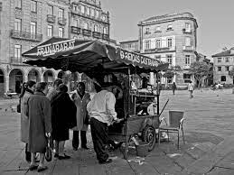
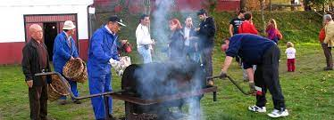

EL MAGOSTO
Indice de contenidos

Qué es el Magosto?
El magosto, magostu, magüestu o amagüestu es una fiesta tradicional en algunas regiones del norte de España, como Galicia, Cantabria, Asturias, León, Zamora, Salamanca y Cáceres (Las Hurdes), así como Canarias (Los Finaos). Se trata de una celebración relacionada con la recolección de la cosecha de castañas similar a las fiestas de la vendimia relacionadas con la recolección de la uva. Carece de fecha concreta pero se trata de una costumbre muy arraigada. Se llama magosto a la hoguera preparada para asar las castañas en torno a la cual se reúnen los vecinos para compartirlas y beber vino nuevo, sidra y orujo recién destilado después de la vendimia. Es también una fiesta muy popular en Portugal, donde se la denomina magusto. Se ha difundido también a nivel internacional como chestnut party.. Se desconoce el origen etimológico de la palabra magosto.
Los elementos comunes de esta fiesta son la celebración en el mes de noviembre (o finales de octubre) y el tener como elementos principales la castaña y el fuego. Con esta fiesta la castaña recupera la importancia que el maíz y la patata le fueron arrebatando en los últimos siglos.
Es una fiesta de raigambre céltica[cita requerida], la fiesta que celebra el final del verano e inicia la mitad del año oscura y fría. En todas las regiones donde se celebra y especialmente en Galicia, está profundamente relacionada con el culto a los muertos, siendo habitual dejar el fuego de la casa encencido y alimentos en torno a la lareira para que los espíritus de los difuntos de la familia vuelvan a sus hogares durante esta noche a calentarse. Numerosos rituales tradicionales se celebran a lo largo de esta fiesta, tanto para purificarse, curarse, recordar a los antepasados, asistir a misa o visitar al curandero local.
Volver al indice
Historia
 Desde el paleolítico los seres humanos se alimentaron de castañas y bellotas. Con la expansión del cultivo de castaños por los romanos, su fruto se convirtió en la base de la alimentación de la población, como fruto fresco, seco o molido para hacer harina. Desde finales del siglo XVIII la generalización del maíz y la patata de América hicieron que las castañas perdieran su protagonismo en la alimentación campesina.
Desde el paleolítico los seres humanos se alimentaron de castañas y bellotas. Con la expansión del cultivo de castaños por los romanos, su fruto se convirtió en la base de la alimentación de la población, como fruto fresco, seco o molido para hacer harina. Desde finales del siglo XVIII la generalización del maíz y la patata de América hicieron que las castañas perdieran su protagonismo en la alimentación campesina.
Hay varias teorías sobre el origen del término magosto: Magnus Ustus (gran fuego) o Magum Ustum (resaltando el carácter mágico del fuego).
Tradicionalmente esta fiesta se realizaba con la recogida de este fruto y servía también como agradecimiento por la cosecha recibida.
Volver al indice
La fiesta
En los días comprendidos entre el 1 de noviembre (Todos los Santos) y el 11 de noviembre (San Martín) (puede celebrarse, también en fechas cercanas, desde finales de septiembre en adelante), se suele celebrar esta fiesta donde no faltan las castañas asadas en el fuego, el vino nuevo y los chorizos.

Tixolo con castañas.
La fiesta consiste en realizar una hoguera y, una vez hay brasas, se coloca sobre ellas un cilindro metálico con agujeros en su base, llamado tambor o, en algunas zonas, tixolo. Sobre este recipiente, u otro por el estilo, se extienden las castañas a las que previamente se les ha realizado un corte en un extremo para que no salten o exploten. Una vez asadas se pelan y se comen.
Es común tiznarse la cara y el cuerpo con los restos de la hoguera y saltar las hogueras (se dice que trae suerte, pero también puede venir de algún tipo de 'reto' de valentía) así como realizar diferentes juegos tradicionales, contar cuentos, cantar canciones populares y gastar bromas.
En el caso de Orense la fiesta se celebra coincidiendo con la festividad de su patrón, San Martín de Tours, el 11 de noviembre. Es costumbre extendida ir a un monte cercano (en el caso de la ciudad uno de los más usados para este fin es el Monte Alegre) y encender una hoguera en la cual se asarán la carne de cerdo, los chorizos y las castañas. Se aprovecha la ocasión para la degustación del vino nuevo de la cosecha.
Volver al indice
Variantes
Existen celebraciones muy similares, pero con otros nombres, en casi todas las zonas de la península ibérica y en Occitania donde abundan las castañas.
En ellas las castañas se pueden asar con miel o cocidas con leche y se suelen acompañar de otros frutas y dulces de temporada como boniatos, higos, nueces, bellotas, granadas, castaña confitada, dulce de membrillo, pastel de calabaza, huesos de santo y panellets y, a veces, de bebidas como la sidra dulce.
En muchos pueblos los muchachos salen a pedir dichos productos de casa en casa y cada vez más comienza a estar relacionada con Halloween.
Volver al indice
Magosto en Cantabria
 En Cantabria la asadura de castañas se conoce con el nombre de Magosta. Se trata de una fiesta ancestral que se celebra en numerosos pueblos de la región, y en muchos de ellos se acompaña con la música tradicional bajo el son del «pitu y tambor» y canciones montañesas.
En Cantabria la asadura de castañas se conoce con el nombre de Magosta. Se trata de una fiesta ancestral que se celebra en numerosos pueblos de la región, y en muchos de ellos se acompaña con la música tradicional bajo el son del «pitu y tambor» y canciones montañesas.
En algunos pueblos cántabros como es el caso de San Mateo, Barros se continúa con la tradición y la Magosta se celebra acompañada de una Romería Montañesa.
José Mª de Pereda en su novela «El sabor de la tierruca» de 1882 describe una magosta en Cumbrales (Polanco) donde los jóvenes lugareños hacían acopio de castañas en la frondosa castañera junto a la mies y tras hacer una hoguera, ponían a asar las castañas que entre risas y tiznes iban comiendo a la vez que danzaban alrededor de la hoguera. La Asociación Sociocultural POLANCO recuperó esta tradición en el municipio polanquino al iniciarse la última década del pasado siglo y, en el mes de noviembre, dedican un día a la fiesta de la «magosta» donde el asado de castaños va acompañado de vino y baile.
Volver al indice